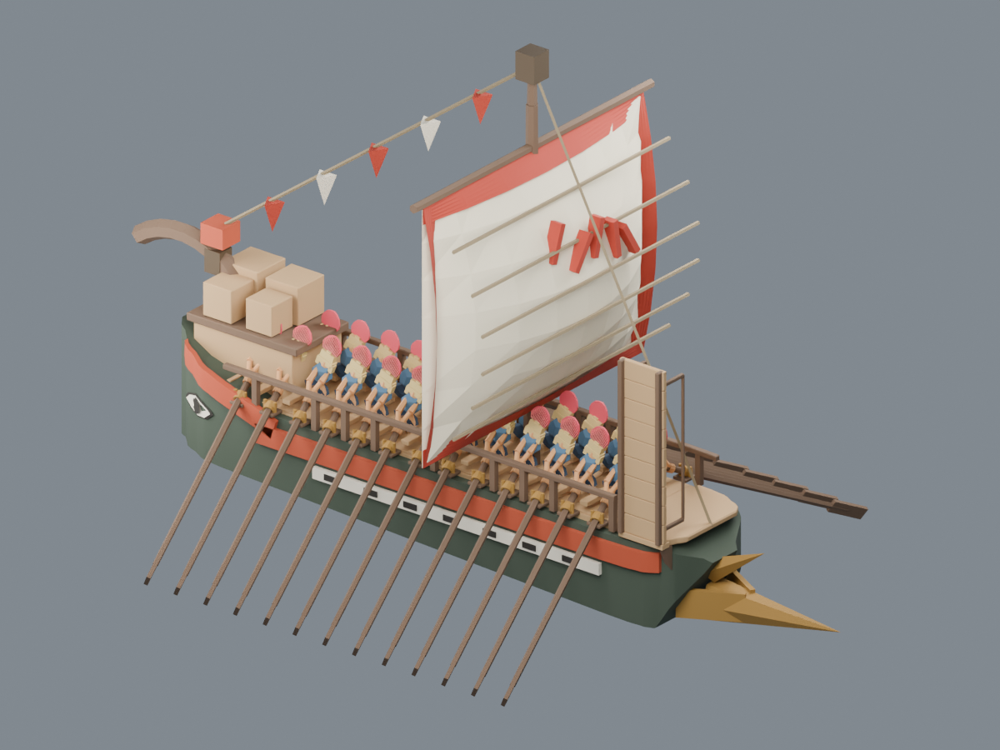
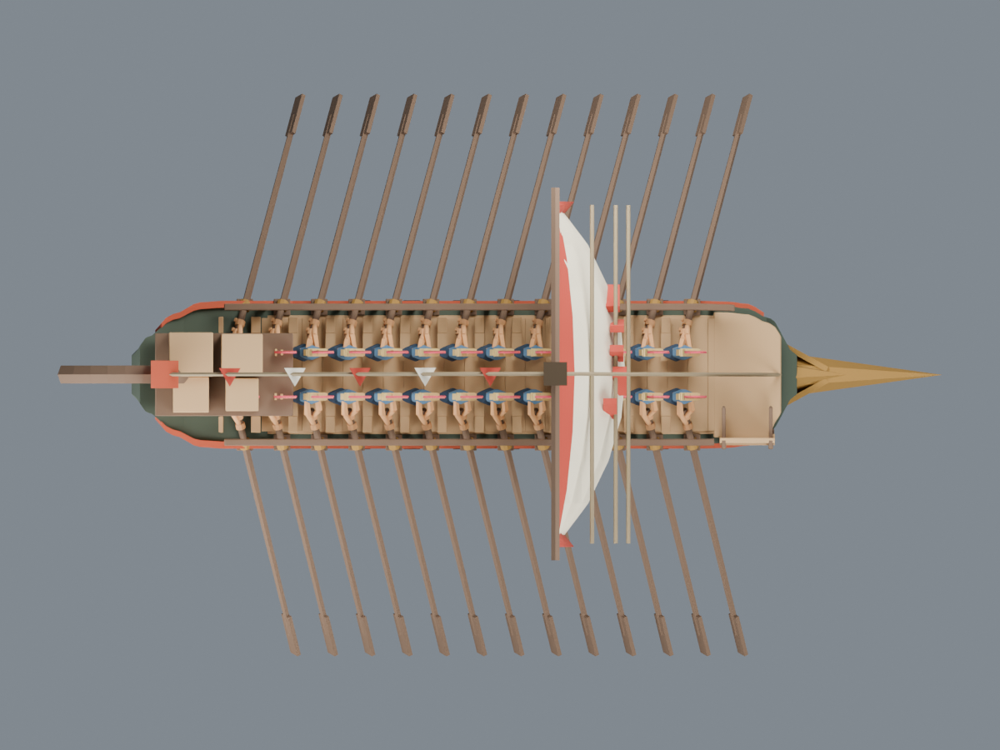
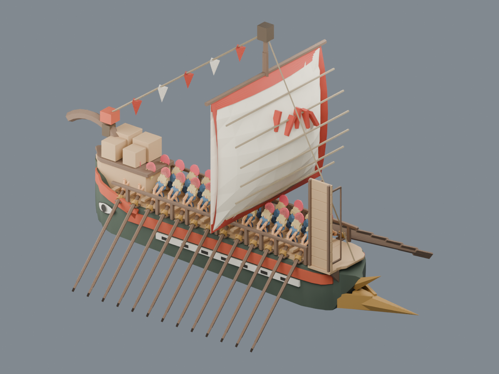
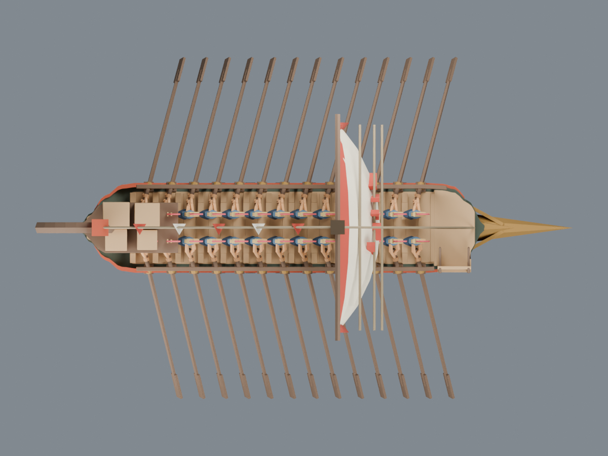

传统战船 · 两轮造型对照
以认可的大透视目标为准：双眼移到卷曲高端，两端船壳收尖。参考图侧视与主透视的眼位不一致，原游戏航向和撞角保持。
目标图

第一轮：移动双眼、初步收窄两端（发现眼白穿壳，未通过）

实际GLB · 透视
实际GLB · 顶视第二轮：继续收尖船壳与甲板，修整眼部贴合

实际GLB · 透视
实际GLB · 顶视两轮均为实际GLB回读渲染。保留26桨手与同步划桨；新船壳的检查以本轮报告为准，不能沿用旧版碰撞结论。仍为造型候选，尚未正式战场替换或完成25人登陆调度。
本轮范围与方向说明 · 返回苔庭总览